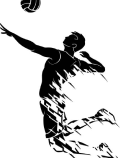
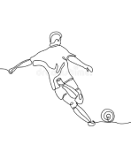
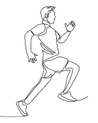

Deportes
A pesar de que ya no practico ninguno desde hace mucho tiempo, me gustan bastante y de entre ellos están el volleyball, el fútbol y atletismo



Como ya se dijo, me llamo Bruno y
estudio en el Instituto Superior
Tecnológico Sudamericano en la
carrera de Software y a continuación
verás un poco de mis gustos.

A pesar de que ya no practico ninguno desde hace mucho tiempo, me gustan bastante y de entre ellos están el volleyball, el fútbol y atletismo
Ahora continuamos con la segunda sección que es la de la comida, de hecho, no hay mucho que decir pues como de todo un poco pero si tengo que elegir entre 3 “platos “ favoritos pues están: chispiolas, fresas con chocolate y jamón con huevo.
Y para finalizar la última sección pero no menos importante y esta es mi interés por la tecnología la cual empezó a muy temprana edad, desde los 12 años se podría decir, y como con la gran mayoría empezó con los video juegos los cuales son mis bases para que yo le tenga bastante apego a esta técnica. Por ello, lo que me gusta más de esta técnica vendrían siendo: